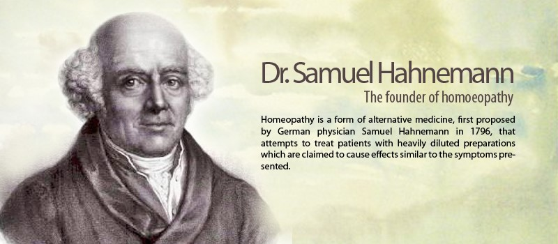

Homoeopathy is based on the principle that ‘like cures like’ – in other words, a substance taken in small amounts will cure the same symptoms it causes if it was taken in large amounts.
This idea dates back to Hippocrates (460-377BC), who also thought that symptoms specific to an individual should be taken into account before making a diagnosis. This is also an important principle of homoeopathy, where an individual’s unique symptoms are important in distinguishing the correct medicine.
 Hahnemann trained in medicine and chemistry. Working as a doctor in the late 18th century, he was dissatisfied with the conventional medical practices of his day. Blood-letting, purging and giving patients large doses of toxic materials such as arsenic and lead were commonplace. Hahnemann disagreed with these harsh methods.
He was investigating the effects of various medicinal substances on himself and other healthy volunteers when he deduced that an illness could be treated with a very small amount of a substance that, in larger quantities, could cause that illness.
To avoid harmful effects from normal doses of the substances, he diluted each medicine until he reached the greatest dilution that would still produce a response. These experiments were called provings and led him to observe and describe the basic principles of homoeopathic medicine.